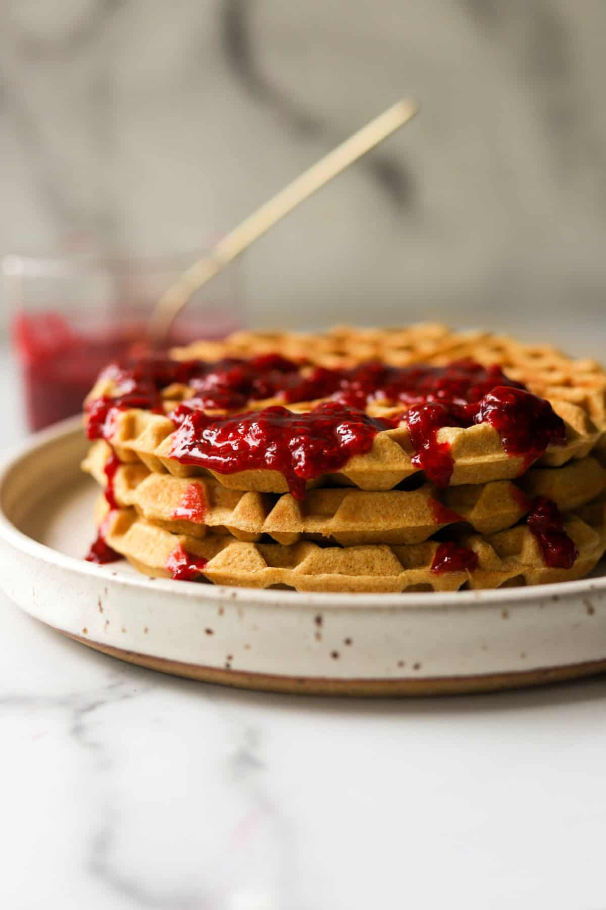

Raspberry Lemon Waffles

Raspberry Lemon Waffles
Sweet, tart, tasty! These waffles are sure to wake you up with how easy and delicious they are.
Ingredients
- 2 cups flour
- 3 tsp baking powder
- 1/2 tsp salt
- 1/4 cup sugar
- 1 1/2 cup milk
- 2 egg yolks
- 4 egg whites
- 1 stick of butter
- 1 tbsp vanilla extract
- 2 lemons zested
- 1/2 cup raspberry jam
Steps
- Preheat the waffle iron on medium.
- Sift together flour, baking powder, salt, and sugar in a bowl.
- In a seperate bowl whisk together milk, egg yolks, vanilla, and lemon zest.
- Pour liquid ingredients into the dry ones andd mix gently until partly combined.
- Add melted butter and continue mixing until fully combined.
- Beat egg whites in a seperate bowl until stiff before foolding them into the batter gently.
- Pour batter into waffle iron and cook until golden brown.
- Top with raspberry jam to taste.
- Enjoy!